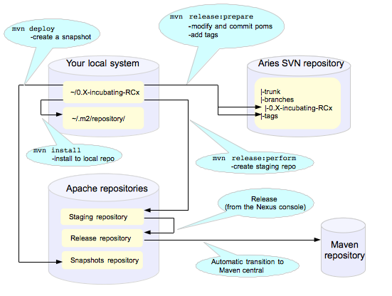

|
|
How to do an Aries ReleaseTo create a release you will need to create the release artifacts and move then to various places (ultimately the Maven central repository). The Maven commands and general outline of the process looks like this:  The picture assumes that you are releasing from a branch rather than from trunk. The full maven commands are not shown - the intention is just to give an indication of which maven commands you will need to use to create assets in different places. Performing a release is described in detail here . This document It covers all the steps listed above so on these pages we will only add things which are specific to the Apache Aries release. Note: the document has not been release and this link will need to be updated when it has. There are a few steps to the process: 1. Discussion of the release and its content on the aries-dev mailing list. 1. Creating and storing GPG keys 1. Setting up your environment 1. Creating a branch to release from 1. Checking release artifacts on your local system 1. Creating a snapshot release (optional - not really part of the release process, uses mvn deploy) 1. Releasing to a staging repository (uses mvn release:prepare and mvn release:perform) 1. Running a vote 1. Promoting the release artifacts to the Apache release repository 1. Making the release artifacts available from the Aries web pages 1. What to do when people find problems with the release artifacts The best current documentation for releases is here - but this isn't released yet. It covers all the steps listed above so on these pages we will only add things which are specific to the Apache Aries release. Discussion of the release and its content on the Aries mailing listBefore starting off the release process it is essential to gain concensus on the aries-dev list that this is the right time for a release and to agree its content. Allow at least a week for this discussion. Creating and storing GPG keysFor Aries your GPG key will need to be in this file: https://svn.apache.org/repos/asf/incubator/aries/KEYS (follow the instructions in the file) and checkin Setting up your environmentFollow the general instructions linked to above. Creating a branch to release fromAlthough this isn't strictly speaking a necessary step it's pretty useful to do it. Running the commands to create the release can take some time, especially if you have to revert anything. This is much easier if you are working in your own branch and not in trunk where other people may be committing code. svn copy https://svn.apache.org/repos/asf/incubator/aries/trunk \ https://svn.apache.org/repos/asf/incubator/aries/branches/0.X-incubating-RCx \ -m "Creating a release branch of /aries/trunk." Where '0.X' is the number of the release. Checkout the new branch, for example, for the 0.2-incubating release: svn co https://svn.apache.org/repos/asf/incubator/aries/branches/0.2-incubating-RCx aries-rc2-candidate IMPORTANT If you are using a branch to release you must edit the top level pom.xml for each module to change the SCM references to point to the branch and to to trunk. For example: <connection>scm:svn:http://svn.apache.org/repos/asf/incubator/aries/branches/0.2-incubating-RCx/parent</connection> <developerConnection>scm:svn:https://svn.apache.org/repos/asf/incubator/aries/branches/0.2-incubating-RCx/parent</developerConnection> <url>scm:svn:http://svn.apache.org/repos/asf/incubator/aries/branches/0.2-incubating-RCx/parent</url> The consequence of forgetting this is that the commands that create the release (mvn release:prepare, mvn release:perform) will declare SUCCESS but will not create a staging repository and will add stuff to the snapshot repository :-/. After taking the branch, change the pom versions in trunk to, say, 0.3-incubating or whatever you want to call the next development version. Checking release artifactsI recommend deleting everything under ...org/apache/aries in your local Maven repo. For linux/Mac users you will find this under ~/.m2/repository/. Check that the code builds using the usual sequence of commands, but add the following arguments to the 'mvn install' command: mvn install -Papache-release -DcreateChecksum=true This should build and install release artifacts in your local repo. Check the 0.1 release to understand what files should be created. To perform legal checks, in each subproject, run: mvn rat:check -fn This will run through the project and its sub projects generating a file called rat.txt in each target directory. The 'fn' means it will carry on even if it find a failure. To inspect the failures, the easiest way I've found so far is: find . -name rat.txt | xargs grep \!\?\? This will pick out the failing file names. Some of the files that rat fails do not require an Apache license, eg MANIFEST.MF, but any .java or .js file does need one. Creating a snapshot releaseTBD. This isn't a necessary step in the release process but should still be documented here. Creating the releaseCreating the release artifacts in a staging repositoryAries is released as a set of modules, not all the modules in Aries are part of the release. Some modules depend on other modules. The release is created by releasing each module separately and in a specific order. It is also desirable to maintain the same IP address for the entire process (the staging repository is associated with your IP address, changing it results in the creation of a second staging repository). Short summary: Use a wired ether net connection and allow about 4 hours for the next few steps. From the top level directory in your branch run: mvn clean Then, change directory to 'parent'. It is necessary to release parent first because everything else depends on it. Run the following commands: mvn install -Papache-release mvn release:prepare -Papache-release mvn release:perform -Papache-release Note The prepare step will make some assumptions about the version of the development steam that is left after the release has been made. When releasing from a branch it may not be a good idea to accept the default for this, it will very likely conflict with the development version in use in trunk. The install command is required to make sure that you have a copy of the parent in your local repository - it's required for releasing the eba-maven-plugin. This _should _ start to put release artifacts into an Apache staging repository . You will need to log in to see it. If nothing appears in a staging repo you should stop here and work out why :-). If you have made a mistake it's quite easy to revert. The release commands make and commit changes to the project's pom.xml files and they create a tag in SVN. To revert the changes you will need to revert the pom.xml files and delete the tag from svn. If you are in Europe the mvn release:prepare command almost always fails at the last step, with a message like: [ERROR](error.html) BUILD FAILURE [INFO](info.html) ------------------------------------------------------------------------ [INFO](info.html) Unable to tag SCM Provider message: The svn tag command failed. Command output: svn: No such revision 936951 This is due to the SVN mirroring in place between Europe and the master in the US. When you make a commit, it isn't immediately available in Europe to svn up to. Just wait 10 secs and repeat the mvn release:prepare command for it to restart where it left off. The next step is to release the eba-maven-plugin. cd ../eba/maven-plugin mvn versions:update-parent mvn versions:use-releases svn commit -m "updated to latest releases" mvn release:prepare -Papache-release mvn release:perform -Papache-release Then for each project, in the order given below: testsupport util blueprint jndi transaction web application jmx quiesce jpa samples See Note 1 below Run the following commands: mvn versions:update-parent mvn versions:use-releases svn commit -m "updated to latest releases" mvn release:prepare -Papache-release -DpreparationGoals="clean install" *See Note 2 below* mvn release:perform -Papache-release
Closing the staging repositoryAfter checking that the staging repository contains the artifacts that you expect you should close the staging repository. This will make it available so that people can check the release. Running the vote(s)Two votes are required for an incubator release. The first from the aries-dev@incubator.apache.org list, the second from general@incubator.apache.org. These run consecutively, 72 hours is required for each vote. After all the modules are present in the staging repository you will need to close the repository so that reviewers can access the modules. At this point you should write two notes to the aries-dev mailing list.
The the source archive files should be explicitly called out by release manager in any release vote. From an Apache legal standpoint, this is what the project is "releasing" and what the community should be voting on. In this sample note , there is a link to each modules' source*.zip file.
The content should just indicate that the note starts a thread to discuss the Aries 0.X-incubating release. After 72 hours, if no problems have been found in the release artifacts, the aries-dev vote can be summarised and closed. Note that at least three +1 votes from Aries IPMC members are required. After closing the vote on the aries-dev list, the second vote (on the general@) can be started. Here is a sample note , the subject of the note is [VOTE]Approval to release Apache Aries (Incubating) version 0.X-incubating After another 72 hours, assuming there are no objections, this vote can also be summarised and closed. Promoting the release artifactsFrom the Nexus pages , select the staging repository and select 'release' from the top menu. This moves the release artifacts into an Apache releases repository, from there they will be automatically moved to the Maven repository. Making the release artifacts available from the Aries web pages.Anything that is to be downloaded must be put in /www/www.apache.org/dist/incubator/aries on minotaur. The distributions are archived here /www/archive.apache.org/dist/incubator/aries. First, delete the previous distribution from the distribution directory. Download the release artifacts using a script like this . Next, update the Aries Downloads pages to refer to the new artifacts. What to do when people find problems with the release
Cleaning up, fixing and re-releasingThe release process makes changes to project poms and adds a tag in svn. The first step is to revert the changes to the poms in the problem modules. The following steps work on a *ix like platform: Determine which revision you want to go back to (eg XXXXX) svn up -r XXXXXX find . -name pom.xml | xargs -I {} mv {} {}_old svn up find . -name pom.xml | xargs -I {} mv {}_old {} svn status #Check what you have changed! svn commit -m "reverting release changes" Next - delete the tag relating to the module from SVN Finally - delete the folder from the staging repository (this seems to take several attempts and a very long time to achieve) Make the fixes that you need to in the project, commit them and work through the release process again. In some cases you may also want to merge from trunk into the release branch. The syntax to do this is: svn merge -c ZZZZZZ https://svn.apache.org/repos/asf/incubator/aries/trunk Where ZZZZZZ is the revision associated with the fix. Note that you will be creating a new staging repository. The commands are repeated here for convenience: mvn versions:update-parent mvn versions:use-releases svn commit -m "<version> RC<#>: updated to latest releases" mvn release:prepare -Papache-release -DpreparationGoals="clean install" mvn release:perform -Papache-release |